بوستات
جراحة أطفال
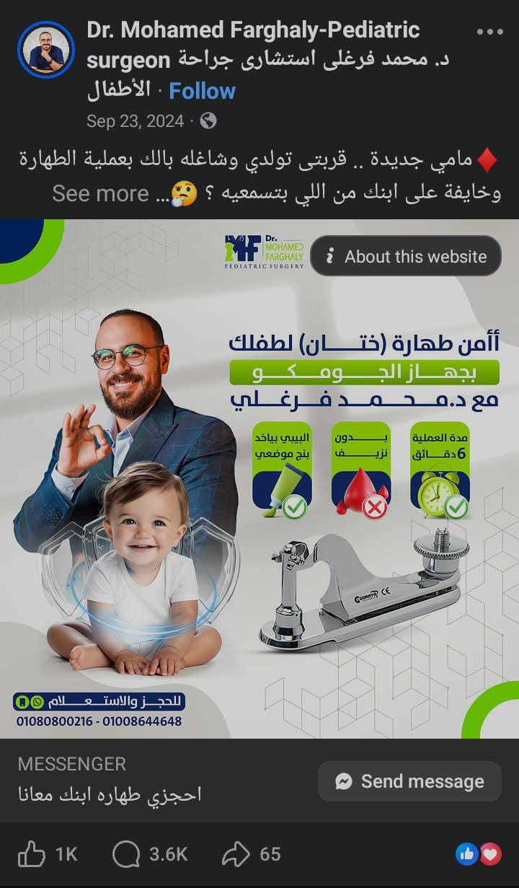
2-♦️مامي جديدة .. قربتى تولدي وشاغله بالك بعملية الطهارة وخايفة على ابنك
من اللي بتسمعيه ؟ 🤔
أنا جاي أطمنك إن معانا طهارة ابنك عملية سهلة و بسيطة و آمنة و بدون مضاعفات ان شاء الله ❤️
وده عشان ... الدكتور محمد فرغلى بيستخدم في الطهارة أفضل الأجهزة وهو جهاز الجومكو
✔️ الجلد بيتقص بشكل تجميلي و مقاسات معينه لكل طفل فاستحالة يحصل تشوه
✔️ حماية تامة لرأس العضو من اى مشاكل او مضاعفات ممكن تتعرضلها
✔️ مفيش قلق بالنسبة للألم أو الوجع عشان البيبي بيبقي واخد بنج موضعي
✔️ 6 دقايق ابنك هيخرج ليكي بيضحك بدون ما تشيلي هم تعب وعياط
✔️ المتابعة بتكون مع الدكتور شخصيا و فى اى وقت
بعد كل المميزات دى اكيد مفيش تردد ان شاء الله ❤️❤️
✅للحجز و الاستعلام :
01080800216 : 📞
01008644648📞
عناوين فروعنا:
♦️الدقى
♦️مصر الجديدة
♦️الشيخ زايد
♦️المقطم .
جراحة أطفال
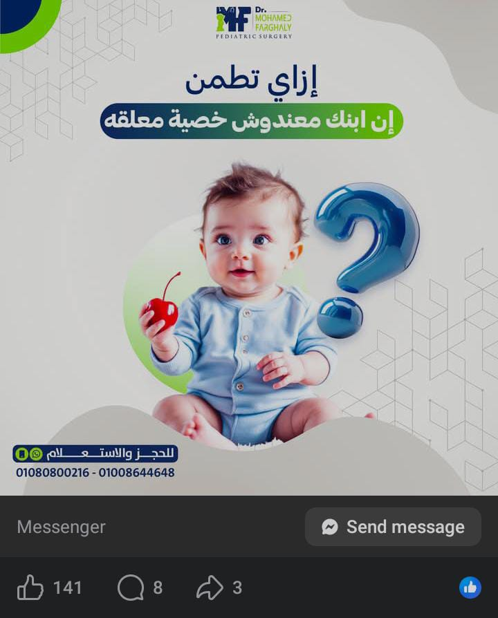
9-🗯 إزاي أطمن إن ابني معندوش خصية معلقه ؟
🔸الخصية المعلقه في العادي بيتم اكتشافها بعد الولادة على طول
بعد الولادة بيتم فحص كيس الصفن جيدا ووقتها بيتم اكتشاف عدم وجود الخصيتين أو واحدة منهم
🔸طيب والحل في الحالة دي؟
✓✓ الحل إننا بنستنى ست شهور بعد ولادة الطفل لأنها ممكن تنزل لمكانها في كيس الصفن طبيعي بدون تدخل
لكن لو عدى الست الشهور ومنزلتش إذا لازم التدخل الجراحي فورا لتنزيلها وتثبيتها 👌🏻
✓✓ وتأخير جراحة الخصيه المعلقه ينتج عنه مضاعفات خطيرة قد تهدد حياة الطفل للأسف
📌كل ما خدنا خطوة أسرع كل ما حمينا الطفل بشكل أفضل
الأطفال هما مسؤوليتنا اللي هنُحاسب عليها ربنا يجعلنا دايما سبب لشفائهم ..
#صحة_أطفالكم_وسلامتهم_هما_رسالتنا
✅للحجز و الاستعلام :ـ
01080800216 : 📞
01008644648 : 📞
عناوين فروعنا:
♦الدقى
♦مصر الجديدة
♦المقطم
♦اكتوبر
#جراح_أطفال #جراحات_الاطفال
#صحة_الأطفال # حديثي_الولادة #الخصيه_المعلقه
جراحة أطفال

10-يقول النبي صلي الله عليه وسلم
"من لا يشكر الناس لا يشكر الله"
دايما بقول أهم حاجة لأي جراح هو فريق التخدير بالأخص لو (جراح أطفال)
التخصص ده حساس جدا ، غير إن بيكون بين إيديك روح طفل لا حول ليه ولا قوة
أنت كمان بيكون بين ايديك روح أب وأم مستنين منك تخرج تطمنهم على طفلهم
وعشان ده يحصل ،وأثناء الجراحة مهم جدا يكون معاك فريق تخدير متميز،
وعشان كده بشكر جدا فريق التخدير اللي معانا وبشوف نفسي محظوظ بيهم جدا وده عشان الفريق محترف جدا
في شغله،وكلهم استشاريين في تخدير الأطفال
•كفاءة عاليه في تخدير الأطفال والعمل على سلامتهم ١٠٠٪
•شغل منسق عالي جدا عشان نضمن نجاح العملية الجراحية من جميع الجهات ونتجنب بل نمنع تماما بفضل الله
حدوث أي مضاعفات خطيرة
• مهارة عالية ودقة غير متناهيه في تقليل الألم بعد اي عمليه
الفريق ده فريق ممتاز وبيتعب معانا جدا و بكرر أني فعلا محظوظ بيه وحقيقي بشكرهم جدا لأن هما سبب
معانا بعد ربنا أن الطفل يخرج بسلام وبدون ألم تقريبا والأهل يكونوا مبسوطين
والنتيجة تكون زي أم يونس مُرضيه كدا 👇🏻
جراحة أطفال
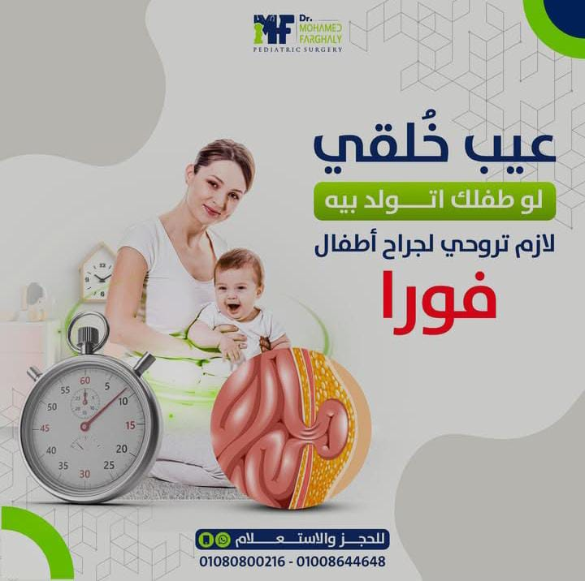
11-📌 عيب خُلقي لو ابنك أو ابنتك اتولدوا بيه لازم تروحي ل جراح أطفال فورا
‼
اللي هو إيه؟
الفتق الإربي...
ده بروز أو انتفاخ في المنطقة الإربيه ( منطقة الحفاض) أسفل البطن أو الحوض
♦ أعراض الفتق الاربي ‼
✓ بروز أو انتفاخ أسفل البطن في المنطقة الإربيه اللي هي منطقة الحفاض
✓ البروز أو الانتفاخ ده بيزيد وبيظهر مع الكحه والحزق والعياط
✓ألم خفيف ، مغص ، وعدم راحه عند طفلك
♦مضاعفات إهمال الفتق الإربي ❓
1️⃣يحصل اختناق ل الفتق والاختناق ده ممكن يسبب حدوث غرغرينة في الأمعاء والأمعاء تموت
2️⃣ حدوث ضمور ل الخصية ( عند الذكور )
3️⃣ حدوث اختناق ل المبيض( عند الإناث)
♦ هل الفتق الاربي ليه علاج ؟
📌 العلاج الوحيد هو الجراحة
عملية جراحية بتكون عبارة عن،، جرح بسيط صغير جدا
حوالي سم تقريبا أسفل البطن بيكون الخيط تجميلي يعني مفيش فك غرز ومفيش قلق
📌 بنفكرك إن سلامة ابنك وصحته مسؤوليتنا 😍
✅للحجز و الاستعلام :
01080800216 : 📞
01008644648📞
عناوين فروعنا:
♦الدقى
♦مصر الجديدة
♦الشيخ زايد
♦المقطم
جلدية وتجميل
“كنت مترددة… بس الفرق باين من أول جلسة.”
ده أكتر تعليق بيتكرر من بنات كتير جرّبوا الليزر معانا.
لأن في مرحلة الاختيار، السؤال مش
هعمل ليزر ولا لأ؟
السؤال الحقيقي هو:
هعمله فين؟
في kyara Clinic
الليزر مش جلسة وخلاص،
هو تجربة محسوبة من أول تقييم البشرة
لحد متابعة النتيجة بعد الجلسة.
أجهزة طبية مناسبة لكل أنواع البشرة
إعدادات متظبطة حسب حالتك مش رقم ثابت
تقليل تهيّج + نتيجة أوضح مع الوقت
الفرق اللي بتحسيه؟
راحة، أمان، ونتيجة تطمّنك إنك اخترتي المكان الصح.
Kyara Clinic
لما تكوني جاهزة تختاري… مش تجرّبي.
اسألي عن جلسات الليزر مع kyara Clinic، اللي هتخلصك من هم إزالة الشعر نهائيا.
جلدية وتجميل
📌زهقتي من علامات و ريحة العرق اللي بتسبب لك إحراج وسط زمايلك في الشغل ؟
مع ديودرانت Elvya، هتنزلي من بيتك ل شغلك وأنتي كلك ثقة بريحتك الجميلة الفريش كأنك كل دقيقة واخدة
شاور
ديودرانت Elvya أنقذ كل اللي جربوه وده عشان ..
• متوفر بكل الروائح اللي تحبيها وكمان بدون رائحة يعني مناسب معاكِ في كل الحالات
• مناسب لكل أنواع البشرة وبيحتوي على ألفا أربوتين اللي هتعملك تفتيح عشان لو بتخافي من الاسمرار
• حماية 12 ساعة بدون حساسية أو التهابات لأنه بيحتوي على السنتيلا والألوفيرا
• خالي تماما من الكحول ، الكبريتات والبارابين وآمن للاستخدام اليومي
ديودرانت Elvya حيوية وانتعاش هتقعدي وسط شغلك بثقة كأنك لسه واخدة شاور
الحقي دلوقتي على الويب سايت عرض التلاتة + واحد هدية واحصلي على أربعة ديودرانت بسعر تلاتة وكمان
شحن
١١ جنية لكل المحافظات لمدة أسبوعين
جلدية وتجميل
بشرتك تستحق الاهتمام الصح!
كل بشرة مختلفة، وكل مشكلة محتاجة حل مخصوص.
في kyara Clinic بنقدملك خدمات متكاملة بعناية طبية:ـ
• خدمات الجلدية: علاج حب الشباب، التصبغات، والحساسية.
• خدمات التجميل: شد البشرة، نضارة طبيعية، ولمسة جمال شخصية.
• الليزر: إزالة الشعر، علاج التصبغات، وتجديد البشرة بأمان وفعالية.
هدفنا مش مجرد تحسين المظهر، لا هدفنا إنك تفهمي بشرتك وتختاري العلاج المناسب عشان توصلي لنتايج
واضحة
، تعيش معاكي العمر.
دلوقتي اسألي عن عروض بداية السنة الجديدة مع kyara Clinic ودلعي بشرتك
Andrology ( جراحة أمراض الذكورة )
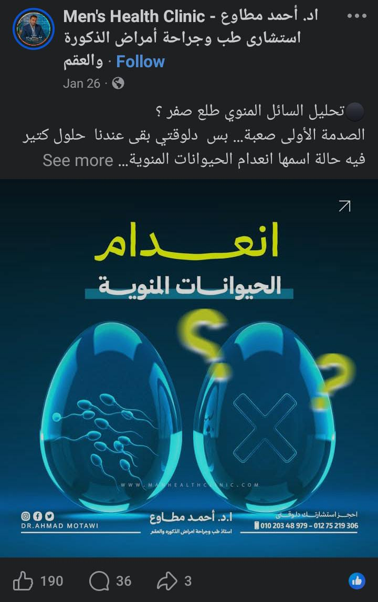
⚫تحليل السائل المنوي طلع صفر ؟
الصدمة الأولى صعبة… بس دلوقتي بقى عندنا حلول كتير
فيه حالة اسمها انعدام الحيوانات المنوية
يعني تحليل السائل المنوي طلع مفيهوش ولا حيوان منوي واحد.
بس خلينا نطمنك شوية
الموضوع مش دايمًا معناه إن الحمل مستحيل.
طب إيه هو انعدام الحيوانات المنوية؟
ببساطة:ـ
السائل المنوي موجود، بس الحيوانات المنوية مش باينة في التحليل.
و الحالة دي بتحصل عند حوالي 1% من الرجالة
ونسبتها بتزيد وسط حالات تأخر الإنجاب.
• والأسباب؟ غالبًا واحد من نوعين:ـ
🟤 النوع الأول: انسدادي
الخصية بتنتج حيوانات منوية طبيعي
بس فيه انسداد في القنوات، فمش بتطلع مع السائل المنوي.
🟤 النوع التاني: غير انسدادي
وهنا المشكلة في الخصية نفسها
إما ضعف إنتاج، اضطراب هرمونات، أو أسباب وراثية.
المهم إن انعدام الحيوانات المنوية مش معناه مفيش أمل
في حالات كتير بنقدر نوصل لحيوانات منوية
إما بالعلاج… أو بالجراحة الميكروسكوبية… أو حتى بالحقن المجهري.
عشان كده:
أي تحليل يقول “صفر”لازم يتقري صح
ويتفسر عند طبيب ذكورة متخصص
مش على جوجل ولا من صديق قلقان زيك
📍لو تحليلك طلع صفر احجز استشارتك دلوقتي مع أ.د أحمد مطاوع أستاذ واستشاري جراحات الذكورة بالقصر
العيني
#دكتور_أحمد_مطاوع
#تأخر_الإنجاب #صحة_الرجال
#معلومة_طبية #انعدام_الحيوانات_المنوية
Andrology ( جراحة أمراض الذكورة )

🟤مش كل تأخر حمل سببه الزوجة…
أحيانًا المشكلة من الزوج في “حركة الحيوان المنوي ” مش بس في “عدد”
كتير من الرجالة بيطلع تحليل السائل المنوي عندهم العدد كويس
بس الحمل مش بيحصل…
ليه؟
_ لأن حركة الحيوانات المنوية ضعيفة.
•الحركة التقدمية لازم تكون أكتر من 32%
•الحركة الكلية ما تقلش عن 40%
أي رقم أقل من كده يقلل فرصة وصول الحيوان المنوي للبويضة، وبالتالي يقلل فرص الحمل.
طيب هل ضعف الحركة يمنع الحمل؟ لا…
لكن بيخليه أصعب وأبطأ،
خصوصًا لو الحركة التقدمية أقل من 20%.
✴️ وأشهر أسباب ضعف الحركة:-
ـ دوالي الخصية (خصوصًا الدرجات المحسوسة)
ـ وجود التهابات أو صديد السائل المنوي
ـ التدخين والسمنة المفرطة
ـ أو وجود أجسام مضادة بتهاجم الحيوانات المنوية
✴️و العلاج مش واحد لكل الناس بيعتمد على السبب، ولازم تشخيص دقيق من دكتور الذكورة
من الآخر ضعف حركة الحيوانات المنوية مش معناه استحالة الحمل
لكن التشخيص المبكر بيفرق
وتأخير القرار العلاجي ممكن يضيّع فرص مهمة
📍 ف لو بتعاني من تأخر حمل، احجز استشارتك دلوقتي مع أ.د أحمد مطاوع أستاذ واستشاري جراحات الذكورة
بالقصر العيني.
🔁 وشير البوست…
يمكن يطمن حد أو يغير قرار مهم في حياته
#دكتور_أحمد_مطاوع
#تأخر_الإنجاب #صحة_الرجال
#معلومة_طبية #صحة_جنسية
كابشن
جراحة أطفال
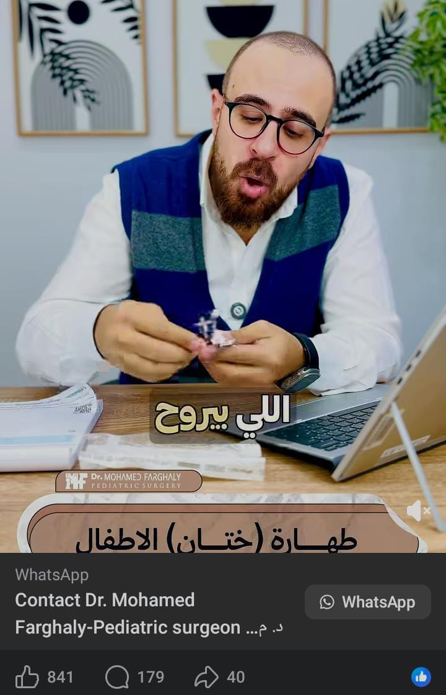
1-📌 أكبر خوف من الطهارة عند كل أم..
إصابة رأس العضو.. وعشان كده اختيار الأداة هو الحل
ف ليه بنقول جهاز الجومكو هو أأمن وأفضل جهاز تطاهري بيه طفلك وإنتي متطمّنة
اعرفي الإجابة في الفيديو ده مع دكتور محمد فرغلي
🔹مدرس و استشاري جراحات الأطفال و حديثي الولادة و المناظير و الاختلافات الخلقية بمستشفي أبو
الريش
🔹دكتوراه جراحة الاطفال و حديثي الولادة و المناظير كلية طب القصر العيني - جامعة القاهرة
🔹عضو الجمعية المصرية لجراحة الأطفال
#صحة_أطفالكم_وسلامتهم_هما_رسالتنا
عناوين فروعنا:ـ
♦الدقى
♦مصر الجديدة
♦المقطم
♦اكتوبر
جراحة أطفال
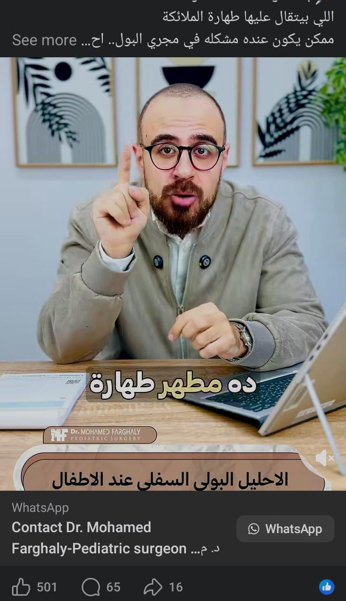
3-📌ابنك اتولد كأنه متطاهر ؟
اللي بيتقال عليها طهارة الملائكة
ممكن يكون عنده مشكله في مجري البول.. احليل بولي سفلي
وعشان كده مينفعش يتطاهر أول ما يتولد.. ليه ؟
التفاصيل المهمة في الفيديو مع دكتور محمد فرغلي
🔹مدرس و استشاري جراحات الأطفال و حديثي الولادة و المناظير و الاختلافات الخلقية بمستشفي أبو
الريش
🔹دكتوراه جراحة الاطفال و حديثي الولادة و المناظير كلية طب القصر العيني - جامعة القاهرة
🔹عضو الجمعية المصرية لجراحة الأطفال
#صحة_أطفالكم_وسلامتهم_هما_رسالتنا
عناوين فروعنا:ـ
♦الدقى
♦مصر الجديدة
♦المقطم
♦اكتوبر
جراحة أطفال
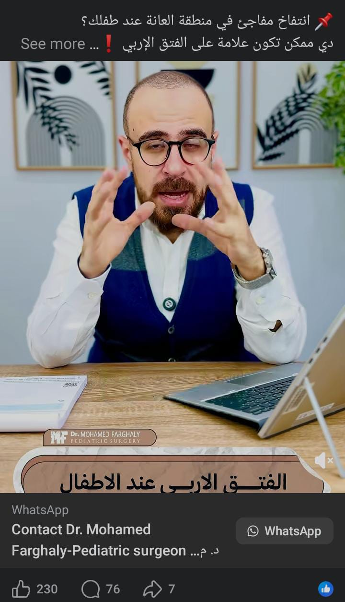
4-📌 انتفاخ مفاجئ في منطقة العانة عند طفلك؟
دي ممكن تكون علامة على الفتق الإربي ❗
الاسم لوحده مخيف…
لكن الحقيقة إن الفتق الإربي غالبًا بسيط، ولو اتلحق بدري لكن فعلا مخيف لو اتأخرنا.
في الفيديو ده هنفهم:
– ليه بيحصل الفتق الإربي؟
– إمتى نقلق وإمتى نطمن؟
– وهل محتاج تدخل جراحي فورًا؟
الإجابة كاملة في الفيديو ده مع د. محمد فرغلي
🔹مدرس و استشاري جراحات الأطفال و حديثي الولادة و المناظير و الاختلافات الخلقية بمستشفي أبو
الريش
🔹دكتوراه جراحة الاطفال و حديثي الولادة و المناظير كلية طب القصر العيني - جامعة القاهرة
🔹عضو الجمعية المصرية لجراحة الأطفال
#صحة_أطفالكم_وسلامتهم_هما_رسالتنا
عناوين فروعنا:ـ
♦الدقى
♦مصر الجديدة
♦المقطم
♦اكتوبر
جراحة أطفال
5-سنة كاملة عدّت… بفضل الله ونفتح صفحة سنة جديدة 2026
سنة فيها شغل كتير، تعب كتير، ومسؤولية ما بتخفش.
جراحة الأطفال مش مهنة وخلاص.
هي أمانة، وقلق دايم، وقرارات مصيرية بتتاخد وإنت شايل في بالك طفل صغير، وحلم أهل، وخوف أم.
في لحظات شفت فيها عيون أطفال مليانة رعب قبل العمليات،
ولحظات تانية شفت نفس العيون بعد الجراحة أهدى، مطمّنة، نايمة في سلام. ❤
الفرق بين اللحظتين دايمًا كان بيفكّرني قد إيه الرحمة أهم من أي مهارة.
حالات كتير، من أبسط الجراحات ل أعقدها زي حالات العيوب الخِلقية،
كانت بتحتاج قلب قبل ما تحتاج إيد جراح.
قرارات ما كانتش سهلة، ومسؤولية تقيلة،
بس دعاء الأهل كان دايمًا سند…
ودعاء الأمهات بالذات كان ليه قوة غريبة تطمّن القلب قبل أي حاجة. 🤲
كل طفل عدّى عليّا السنة دي علّمني حاجة.
علّمني الصبر، والحب للأطفال أكتر، وإن الشغل ده عمره ما يبقى روتين.
شكرًا لكل أب وأم وثقوا،
وشكرًا على الصبر، والدعاء، وتحمل القلق.
ربنا يشفي كل طفل،
ويكتب الطمأنينة لكل بيت،
وإن شاء الله السنة الجاية تكون أرحم، وأخف،
وفيها وجع أقل وفرحة أكتر ل أولادكم جميعا. 🙏
#صحة_أطفالكم_وسلامتهم_هما_رسالتنا
♦ دكتور محمد فرغلي :
🔹 مدرس واستشاري جراحات الأطفال وحديثي الولادة والمناظير والاختلافات الخلقية بمستشفى أبو الريش
🔹 دكتوراه جراحة الأطفال وحديثي الولادة والمناظير كلية طب القصر العيني - جامعة القاهرة
🔹 عضو الجمعية المصرية لجراحة الأطفال
جراحة أطفال
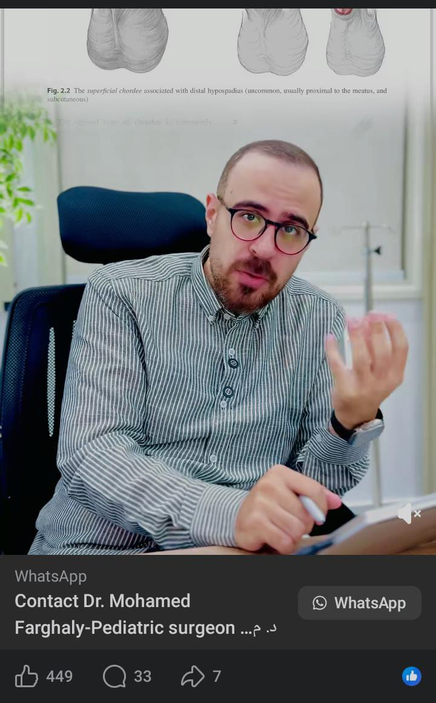
6-📌إيه الحل في حالة الإحليل السفلي المعقد لما الفتحة تكون تحت رأس العضو
على طول أو في أول رأس العضو مع وجود إنحناء في العضو
حالة معقدة !
ليها حل ؟ وهل العلاج بيكون على مرحلة واحدة ولا أكتر ؟
↙ هيجاوبك على السؤال في الفيديو ده د. محمد فرغلي
ولو تعرف حد طفله بيعاني من إحليل سفلي منشن ليه في الفيديو ده وأعمل شير عشان يستفيد
🔹دكتور محمد فرغلي ،مدرس و استشاري جراحات الأطفال و حديثي الولادة و المناظير و الاختلافات
الخلقية بمستشفي أبو الريش
🔹دكتوراه جراحة الاطفال و حديثي الولادة و المناظير كلية طب القصر العيني - جامعة القاهرة
🔹عضو الجمعية المصرية لجراحة الأطفال
#صحة_أطفالكم_وسلامتهم_هما_رسالتنا
عناوين فروعنا:ـ
♦الدقى
♦مصر الجديدة
♦المقطم
♦اكتوبر
Website : https://drmohamedfarghaly.com
#صحة_الأطفال #الإحليل_السفلي
#جراحة_أطفال #إنحناء_العضو_الذكري
جراحة أطفال

7-📌 إصلاح الطهارة خطوة مهمّة جدًا… في حال إن الطهارة أول مرة مكانتش
مظبوطة
لأنها بتضمن إن الطهارة تكون صحيحة وآمنة زي ما المفروض تكون من البداية.
وعلشان كده بنفكّركم دايمًا إن الطهارة لازم تتعمل بدقّة وعلى إيد حد متخصص عشان منلجأش للإصلاح
ده مراد… كانت الطهارة محتاجة إصلاح، والحمد لله عملنا الإجراء ، وبقى زي الفل
🔸احجز الطهارة دلوقتي بأمان ، مع دكتور محمد فرغلي ،
🔹مدرس و استشاري جراحات الأطفال و حديثي الولادة و المناظير و الاختلافات الخلقية بمستشفي أبو
الريش
🔹دكتوراه جراحة الاطفال و حديثي الولادة و المناظير كلية طب القصر العيني - جامعة القاهرة
🔹عضو الجمعية المصرية لجراحة الأطفال
#صحة_أطفالكم_وسلامتهم_هما_رسالتنا
عناوين فروعنا:ـ
♦الدقى
♦مصر الجديدة
♦المقطم
♦اكتوبر
Website : https://drmohamedfarghaly.com
#صحة_الأطفال #حديثي_ولادة
#جراحة_أطفال #الطهارة
جراحة أطفال
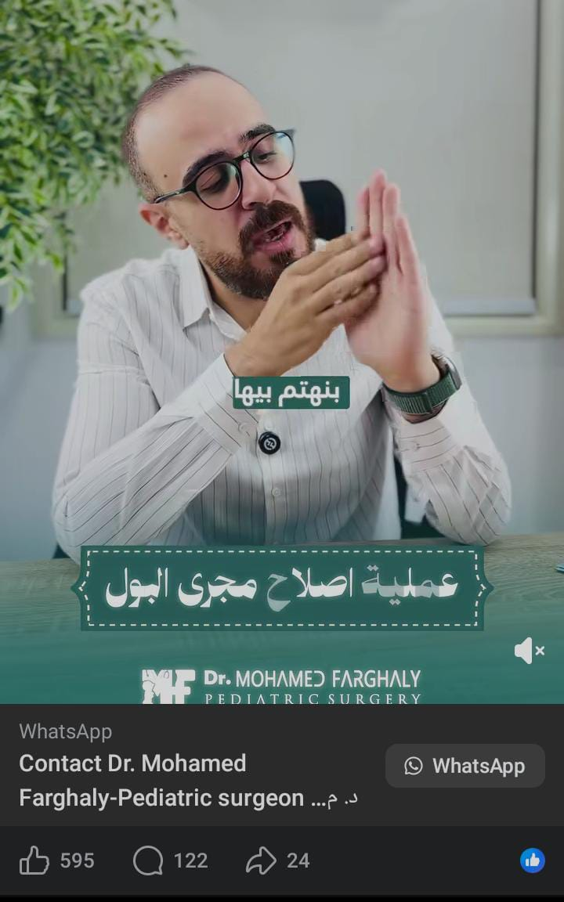
8-📌 عملية إصلاح مجرى البول في حالات الإحليل السفلي… بتتم إزاي؟
• إزاي بنعيد بناء مجرى البول من الأول؟
• ليه مجرى البول لازم يكون بشكل أنبوبي واسع؟
• وإيه دور القسطرة بعد الجراحة؟
✳كل التفاصيل المهمة دي هتعرفيها في الفيديو ده
ولو ابنك عنده مشكله في مجري البول احجزي استشارتك دلوقتي 📞
دكتور محمد فرغلي
🔹مدرس و استشاري جراحات الأطفال و حديثي الولادة و المناظير و الاختلافات الخلقية بمستشفي أبو
الريش
🔹دكتوراه جراحة الاطفال و حديثي الولادة و المناظير كلية طب القصر العيني - جامعة القاهرة
🔹عضو الجمعية المصرية لجراحة الأطفال
#صحة_أطفالكم_وسلامتهم_هما_رسالتنا
عناوين فروعنا:ـ
♦الدقى
♦مصر الجديدة
♦المقطم
♦اكتوبر
Website : https://drmohamedfarghaly.com
#صحة_الأطفال #حديثي_الولادة
#جراحة_أطفال #اصلاح_مجري_البول
جراحة أطفال
3-📌 12 شكل لحالات الإحليل السفلي عند الأطفال لازم الجراح ياخد باله منها.
اسمع وافهم كل حالة في الفيديو ده مع دكتور محمد فرغلي:
🔹 مدرس و استشاري جراحات الأطفال و حديثي الولادة و المناظير و الاختلافات الخلقية بمستشفي أبو
الريش
🔹 دكتوراه جراحة الاطفال و حديثي الولادة و المناظير كلية طب القصر العيني - جامعة القاهرة
🔹 عضو الجمعية المصرية لجراحة الأطفال
#صحة_أطفالكم_وسلامتهم_هما_رسالتنا
عناوين فروعنا:ـ
♦ الدقى
♦ مصر الجديدة
♦ المقطم
♦ اكتوبر
#جراحة_أطفال #إحليل_سفلي
جراحة أطفال
5-📌 لكل جراح أطفال ليه مهم جدا الحكم على نوع العملية اللي هنعملها ولازم
نكون
فاهمين أبعاد القرار اللي هناخده.
اعرف معانا في الفيديو ده مع دكتور محمد فرغلي:
🔹 مدرس و استشاري جراحات الأطفال و حديثي الولادة و المناظير و الاختلافات الخلقية بمستشفي أبو
الريش
🔹 دكتوراه جراحة الاطفال و حديثي الولادة و المناظير كلية طب القصر العيني - جامعة القاهرة
🔹 عضو الجمعية المصرية لجراحة الأطفال
#صحة_أطفالكم_وسلامتهم_هما_رسالتنا
عناوين فروعنا:ـ
♦ الدقى
♦ مصر الجديدة
♦ المقطم
♦ اكتوبر
#جراحة_أطفال #إحليل_سفلي
جلدية وتجميل
📌معانا من كتر فرحتك، هتحبي كل لحظة جمال ✨
بشرة صافية، مشرقة، وإطلالة مليانة ثقة وسحر
شغفنا بالتفاصيل في كل لمسة هيخليكي تحبي تعيدي التجربة
💬 منشن لصاحبتك اللي محتاجة تشوف النتيجة دي وتستمتع بالإشراقة
✨"Book your consultation now"
+971
skincare | facial glow | acne & scar treatment | pigmentation solutions | botox | filler |
youthful
skin | skin care routine |
#بشرة_مشرقة #تصبغات_الوجه
#تجديد_البشرة #عيادات_تجميل
#صحة_البشرة
#scars
#دكتورة_عزة_العجوز
#تجميل_بنات
جلدية وتجميل
📌صوت فرحة البيشنت في الفيدباك… يعرفك الفرق اللي حست بيه من أول لحظة✨
بشرة صافية، مشرقة، وإطلالة مليانة ثقة وسحر
شغفنا بالتفاصيل في كل لمسة هيخليكي تحبي تعيدي التجربة
💬 منشن لصاحبتك اللي محتاجة تشوف النتيجة دي وتستمتع بالإشراقة
✨"Book your consultation now"
+971
skincare | facial glow | acne & scar treatment | pigmentation solutions | botox | filler |
youthful
skin | skin care routine |
#بشرة_مشرقة #تصبغات_الوجه
#تجديد_البشرة #عيادات_تجميل
#صحة_البشرة
#scars
#دكتورة_عزة_العجوز
#تجميل_بنات
جلدية وتجميل
📌كل خلية في الجسم بتحكي قصة العناية أو الإهمال…
والسيلوليت ما بيستثناش حد.
بس دلوقتي، الحلول موجودة — آمنة، فعّالة، ومصممة لجسمك أنتِ ، وهتعرفيها من د. عزة في الفيديو ده
..
✨Discover your personalized cellulite solution — book your consultation today.
📱 +971556833092
Cellulite | CelluliteTreatment | SmoothSkin | FirmSkin | ByeCellulite | BodyConfidence |
AntiCellulite | CelluliteSolutions
جلدية وتجميل
📌لمسة فيلر خفيفة كفاية تغيّر الـvibe بتاع شفايفك من غير ما تغيّر ملامحك.
في السنّ الصغير، التفاصيل البسيطة هي اللي بتكسب.
والنتيجة ، شفايف طبيعية وناعمة لبنوتة في أوائل العشرين… ورضا مامتها كان أحلى جزء 🤍✨
Book your lip fillers session now
+
lipfiller | lipenhancement | lipaugmentation |Fillers | lips | lipsgoals | fillerexpert |
liptechnique
#dr_azza_elagouz
#فيلر_شفايف
#دكتورة_تجميل_الامارات
جلدية وتجميل
📌سيشن فيلر الشفايف المرة دي بنوتة ف اوائل العشرين فا كان ضروري اعملها
حاجة
تليق علي سنها و متكونش مبالغ فيها ..
و الحمد لله هي و مامتها كانو مبسوطين بالنتيجة
Book your lip fillers session now
+971
lipfiller | lipenhancement | lipaugmentation |Fillers | lips | lipsgoals | fillerexpert |
liptechnique
جلدية وتجميل
📌"أكسدة البشرة؟ مش نهاية العالم! خطوة صغيرة هترجع لبشرتك لمعتها من تاني ،
اعرفيها في الفيديو ده
🔸ولو بتعاني من مشكلة في بشرتك اكتبي لينا في الكومنتس وهنرد عليكِ
Book your appointment
+971
#dr_azza_elagouz
#fyp
#دكتورة_تجميل_الامارات
Andrology ( جراحة أمراض الذكورة )
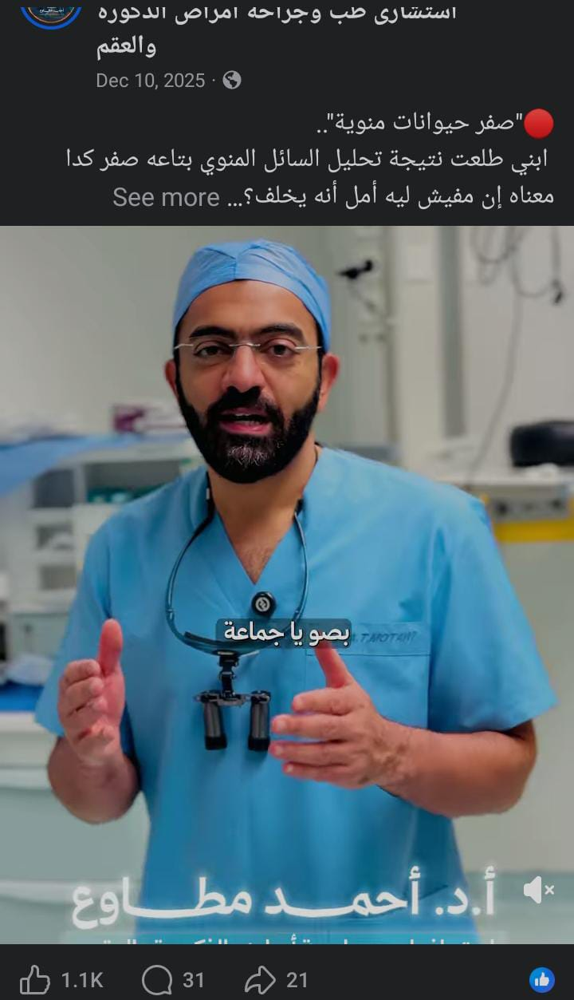
🔴"صفر حيوانات منوية"..
ابني طلعت نتيجة تحليل السائل المنوي بتاعه صفر كدا معناه إن مفيش ليه أمل أنه يخلف؟
سؤال ل دكتور أحمد مطاوع هيجاوب عليه معاكم في الفيديو ده
↙ اسمع الفيديو ولو عندك نفس الشكوى احجز استشارتك دلوقتي مع أ.د أحمد مطاوع أستاذ واستشاري جراحات
الذكورة بالقصر العيني
#دكتور_أحمد_مطاوع
#انعدام_الحيوانات_المنوية #تأخر_الإنجاب
#صحة_جنسية #صحة_الرجال
Andrology ( جراحة أمراض الذكورة )
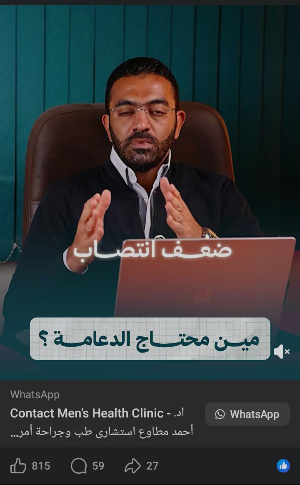
🔴 ليه بنقولك إن تركيب دعامة العضو الذكري بداية حياة مستقرة وثقة راجعة من
جديد
في حالات ضعف الانتصاب..
ـ أمتى تاخد قرار تركيب الدعامة ؟
ـ انواع دعامة العضو الذكري ؟
ـ إزاي تاخد قرار العملية وبناءا على إيه ؟
في الفيديو ده دكتور أحمد مطاوع بيشرح ببساطة ووضوح كل ما تريد معرفته عن دعامة العضو الذكري
📍لو بتعاني من ضعف الانتصاب احجز استشارتك دلوقتي مع أ.د. أحمد مطاوع أستاذ واستشاري جراحات
الذكورة
بالقصر العيني
#دكتور_أحمد_مطاوع
#صحة_الرجال #دكتور_ذكورة
#ضعف_الانتصاب #دعامة_العضو_الذكري
Andrology ( جراحة أمراض الذكورة )
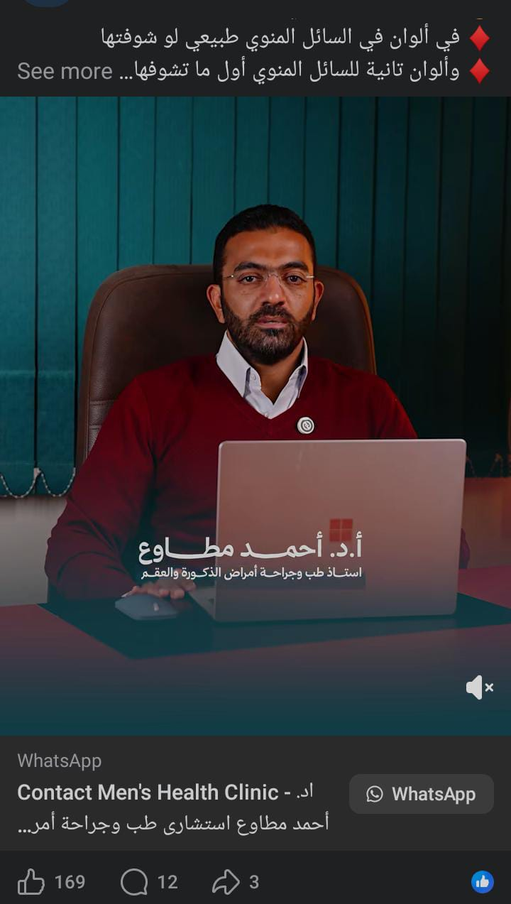
🟡تغيّر لون السائل المنوي علامة لازم تاخد بالك منها ؟
♦ في ألوان في السائل المنوي طبيعي لو شوفتها
♦ وألوان تانية للسائل المنوي أول ما تشوفها لازم تروح لدكتور فورا
في الفيديو ده هتفهم من ا.د أحمد مطاوع أستاذ واستشاري جراحات الذكورة بالقصر العيني
#دكتور_أحمد_مطاوع
#صحة_جنسية #صحة_الرجال
#تغير_لون_السائل_المنوي #السائل_المنوي
Andrology ( جراحة أمراض الذكورة )
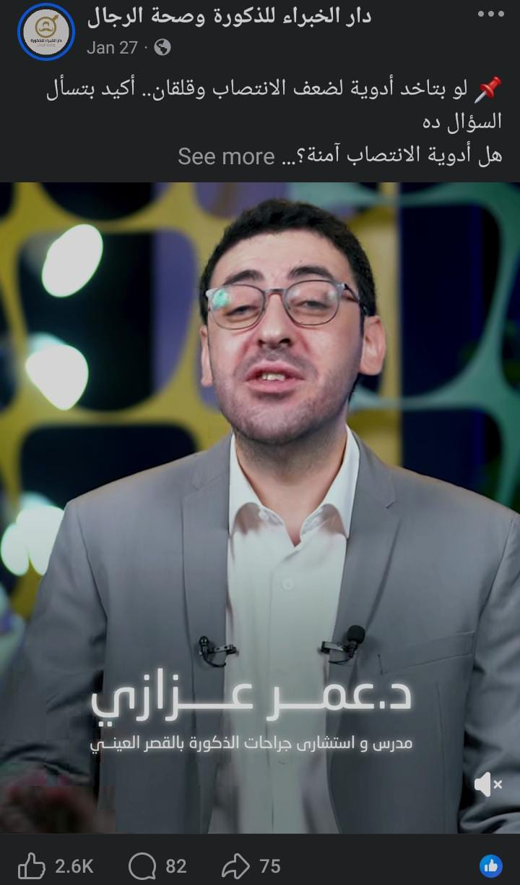
📌 لو بتاخد أدوية لضعف الانتصاب وقلقان.. أكيد بتسأل السؤال ده
هل أدوية الانتصاب آمنة؟
يبقى شوف الفيديو ده هتعرف:ـ
✔️ أهميتها وفايدتها للرجالة.
✔️ إزاي بتشتغل في الجسم.
✔️ هل ليها آثار جانبية؟
واستنوا الفيديوهات الجايه من سلسلة اسأل خبير
📞 احجز استشارتك دلوقتي في دار الخبراء للذكورة وصحة الرجال
📱 للحجز والاستعلام 01066055702
#دار_الخبراء #اسأل_خبير #صحة_الرجال
#أدوية_الانتصاب #ضعف_الانتصاب
Andrology ( جراحة أمراض الذكورة )
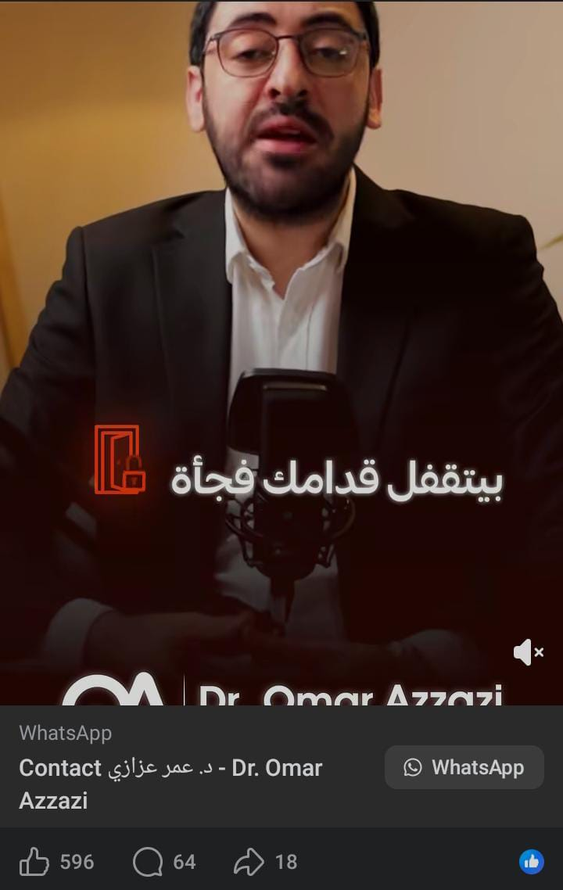
إنعدام الحيوانات المنوية بيخلي رجولتك في اختبار صعب..
بس الحقيقة إن الرقم ده مش النهاية، بل بداية الطريق للفحص والعلاج
♦️ اطمن واتفرج علي الفيديو ده عشان تعرف عن انعدام الحيوانات المنويه وعلاجها
وابعت الفيديو لاي حد محتاجه عشان تطمنه 🙏
د. عمر عزازي
مدرس واستشاري جراحات الذكورة بالقصر العيني
انعدام الحيوانات المنويه | تأخر الانجاب | تأخر حمل | صفر حيوانات منويه | تفتيش ميكروسكوبي |
خصوبه | تحليل حيوانات منويه | علاج انعدام الحيوانات المنويه
#دكتور_عمر_عزازي
#صحة_الرجل #تأخر_الانجاب
#الحيوانات_المنوية #انعدام_الحيوانات_المنوية
Andrology ( جراحة أمراض الذكورة )
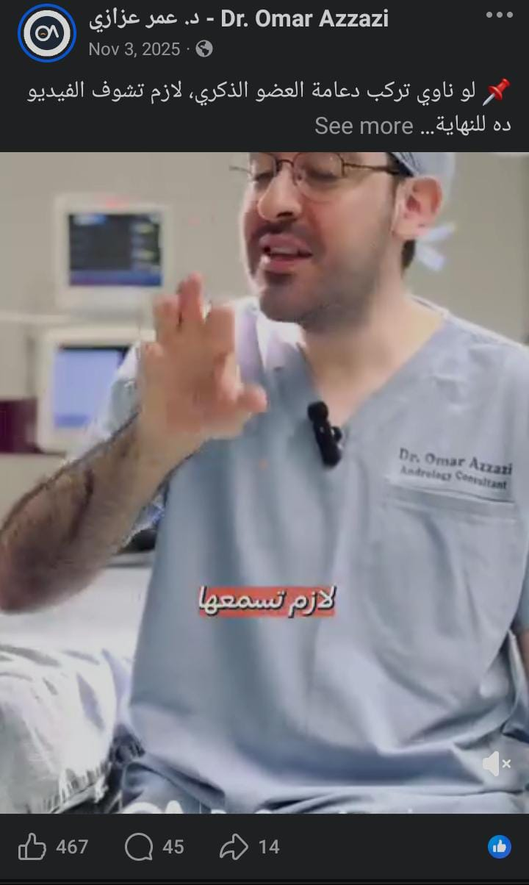
📌 لو ناوي تركب دعامة العضو الذكري، لازم تشوف الفيديو ده للنهاية
دكتور عمر عزازي مدرس واستشاري جراحات الذكورة بالقصر العيني.. بيشرح أهم ٤ نصايح قبل العملية 👌
دعامة العضو الذكري | علاج ضعف الانتصاب | دعامة القضيب | عملية الدعامه
#دكتور_عمر_عزازي
#جراحة_ذكورة #أمراض_ذكورة
#دعامة_القضيب #دعامة_العضو_الذكري
https://www.facebook.com/reel/2166675507195707/?app=fbl
Andrology ( جراحة أمراض الذكورة )
📌في عيادتنا… في أسرار كتير مش بتتقال! أسرار بتفرق بين دكتور شاطر… ودكتور
شاطر
و فعلاً فاهم المريض محتاج إيه
🔘 هل عشان تكون دكتور عظيم ، لازم تكتب روشتة وش وضهر؟
• اعرف السر والتفاصيل كاملة في الفيديو ده ل د. عمر عزازي
📍 و لسه في أسرار كتير ورا العيادة… تابعونا علشان تعرفوا أكتر وتفهموا حياتكم الصحية بشكل أعمق
د. عمر عزازي مدرس واستشاري جراحات الذكورة بالقصر العيني
#أسرار_العيادة_مع_دكتور_عمر_عزازي
#صحة_الرجل #الصحة_الجنسية
#الحياة_الزوجية #دكتور_عمر_عزازي
Andrology ( جراحة أمراض الذكورة )
مريضنا النهاردة حكايته حكاية.. بيعاني من ضعف شهر العسل بس هو معندوش ضعف
أصلا
المشكله ايه ؟
#دكتور_عمر_عزازي
#صحة_الرجل #أمراض_ذكورة
#ضعف_شهر_العسل
Andrology ( جراحة أمراض الذكورة )
قصة تركيب دعامة هيدروليكية لشاب سوداني عنده ضعف انتصاب خلقي
#دكتور_عمر_عزازي
#صحة_الرجل #أمراض_ذكورة
#دعامات_الانتصاب #الدعامة_الهيدروليكية
سكريبتات
جلدية وتجميل
HOOK
“فيلر ولا محفزات الكولاجين…
السؤال اللي كل واحدة محتارة فيه؟
تعالى نكشف الفرق الحقيقي!”
Body
Filler | Collagen Stimulators
النتائج
“الفيلر بيقدّم نتيجة فورية – يعني هتشوفي الامتلاء والنحت أول ما تخلصي الجلسة، لأن المادة بتملا
المكان على طول بمجرد الحقن .
أما محفزات الكولاجين؟
نتيجتها بتكوّن تدريجيه مع الوقت لأن هدفها إن جسمك ينتج كولاجين جديد ببطء."
الهدف الأساسي (Main Goal)
Filler | Collagen Stimulators
“الفيلر معمول علشان يدي ڤوليوم وشد لحظي – مثلاً خدود، شفايف، نحت الفك.
أما محفزات الكولاجين بتشتغل على إنها تحسن جودة البشرة نفسها – يعني تعمل ترطيب، مرونة، وقوام
أنعم، من
غير نحت دايركت . ”
مدة الاستمرار (How Long It Lasts)
Filler | Collagen Stimulators
“الفيلر العادي ممكن يستمر من 6 شهور لـ سنة ونص حسب النوع والمنطقة.
لكن محفزات الكولاجين أحيانًا نتيجتها ممكن تعيش لسنة– وسنتين أو أكتر، لأن التأثير بيبقى جاي من
انتاج
جسمك للكولاجين. ”
العيوب (Drawbacks)
Filler | Collagen Stimulators
“الفيلر لو اتعمل غلط… ممكن يدي شكل مبالغ فيه أو غير متناسق، ولازم يتعمل على ايد دكتور شاطر وعنده
خبرة "
طيب ومحفزات الكولاجين؟
نتيجتها أبطأ وبتحتاج جلسات كتير وصبر، وده مش مناسب لو عايزة نتيجة سريعة. ”
CTA
“دلوقتي قولولي:
انتِ Team فيلر سريع وملحوظ؟
ولا Team تحسين طبيعي للكولاجين؟
اكتبي لنا رأيك في الكومنتات
ولو حابة أعمل مقارنة مع الخيوط أو البوتوكس… احفظي الريل ”
جلدية وتجميل
ملحوظة
“[الدكتور تحط سبب Love it أو Drop it]
[معلومة سريعة عن المنتج / المادة]
[نصيحة قصيرة لكيفية الاستخدام أو الحذر]”
Hook
“دكتور عزة في أقل من دقيقة قولي لنا … المواد دي Love it ولا Drop it؟”
“حلو… يلا نبدأ "
1️⃣ [ الريتينول ] – Love it / Drop it
2️⃣ [Vitamin C] – Love it / Drop it
3️⃣ [هايليرونيك أسيد ] – Love it / Drop it
4️⃣ [Physical scrab] – Love it / Drop it
5️⃣ [نياسيناميد] – Love it / Drop it
6️⃣ Whiting Cream _ love it or Drop it
7️⃣ أحماض التقشير AHA
Love it or Drop it
CTA
“ودلوقتي دوركم…
قوليلي في الكومنتات: كام واحد Love it؟
وكام واحد Drop it؟
ولو حابة أعمل الجزء التاني بمواد ترند أكتر… احفظي الريل ”
جلدية وتجميل
Hook
“جورجينا رودريغز…
نجمة الجمال
ملامحها اتغيّرت بس من غير ما تفقد هويتها
يا ترى عملت إيه بالظبط؟”
Body
“لو بصّينا على صور جورجينا زمان ودلوقتي
هنلاحظ إن التغيير مش مبالغ فيه
هتلاقي بس نحت… وتحديد… وتوازن واضح
وده اللي خلّى ناس كتير تسأل:
إزاي؟”
وأنا ؟ هقولك
✓ أول حاجة – شدّ الخدود بالفيلر
إن جورجينا اعتمدت على شد الخدود بالفيلر
بحمض الهيالورونيك
مش علشان تكبّر الخدود
لكن علشان ترفعها وتبرز عظم الخدين
فيديها شكل شبابي ومشدود طبيعي.”
عشان كدا بنقول “الفيلر الصح للخدود مش اللي يملا
اللي يرفع ويظبط التوازن.”
✓ تاني حاجة – تحديد الفك والذقن
“التحول في خط الفك والذقن عندها واضح
بقى أنعم… ومحدد…
وده غالبًا باستخدام فيلر أكتر كثافة
علشان يعمل شكل V
من غير ما يغيّر ملامحها.”
“يعني تحديد الذقن والفك أهم بكتير من التكبير المبالغ.”
✓ تالت حاجة – تقنية النقاط الثمانية
طيب ودي يعني إيه ؟
“يعنى التناسق العام في وشّها
من الخدود
للذقن
وحوالين العينين
يخلينا نقول إنها ممكن تكون اعتمدت تقنية النقاط الثمانية
اللي بتوزّع الفيلر في 8 نقاط استراتيجية
علشان تدي رفع عام ومتوازن للوش”
“ف لو عايزة نتيجة شاملة وناعمة
التقنيات المتكاملة أحسن من التركيز على نقطة واحدة.”
✓ رابع حاجة – فيلر تحت العين
“منطقة تحت العين عند جورجينا
بقت أنعم وأهدى
وده يدل على احتمال استخدام فيلر خفيف
قلل التجاويف والهالات
ومن غير ما يغيّر تعبير العين.”
“ ولأن تحت العين منطقة حساسة
لازم فيلر خفيف جدًا وبيد خبيرة.”
✓ الخلاصة
“جمال جورجينا مش في التغيير
لكن في النحت الذكي
فيلر عصري
لمسات مدروسة
ومن غير ما تفقد هويتها.”
CTA
“بعد الفيديو ده تحبّي نعمل ريل تاني
عن نجمة تانية ونحلّل جمالها؟
قولولي في الكومنتات
مين تحبّوا تكون الجاية”
جلدية وتجميل
Hook
أغلب الناس بتفشّل في تفتيح بشرتها بسبب الغلطة دي!
تعالى أقولك الحقيقة…
Body
الترتيب –
• المرتبة السادسة: فيتامين C
“… آه حلو
يدي إشراقة ويصحي البشرة
ويخفف آثار بسيطة
بس التصبغات التقيلة؟
لوحده مش هيشيلها.”
• المرتبة الخامسة: النياسيناميد
“ناس كتير فاكراه سحر
هو فعلاً ممتاز
يهدّي البشرة وينظّم الدهون
بس تفتيح قوي؟
لا… بالراحة عليه.”
• المرتبة الرابعة: الترطيب
“هتقولي مرطب إيه وبتاع إيه؟
أقولك…
من غير ترطيب
أي تفتيح = ولا حاجة
البشرة العطشانة بتسمر أسرع.”
• المرتبة التالتة: المقشرات الخفيفة
“دي بتفرق فعلًا
تشيل الجلد الميت
وتفتح اللون شوية
بس خلي بالك
مش كل يوم
وما تزدش عن حدها.”
• المرتبة التانية: كريمات التفتيح زي الهيدروكينون
“آه… دي تقيلة
وتجيب نتيجة
بس مش لعبة
تستخدميها غلط؟
هتقلب ضدك.”
• أما المرتبة الأولى – اللي محدش بيهتم بيها كفاية: واقي الشمس
“من غير واقي شمس؟
ولا كريم تفتيح
ولا سيرم
ولا أي حاجة هتنفع
ده أساس أي علاج تصبغات.”
CTA
“الترتيب هو اللي بيعمل الفرق مش كتر الProducts اللي عندك
ولو استفدتِ احفظي الفيديو
وابعتيه لحد بيعاني من التصبغات
وتابعني عشان نرتّب بشرتك صح ”
جلدية وتجميل
Hook
“في 5 حاجات لو عملتيهم صح…
بشرتك هتتحول 180 درجة
ورقم 1؟
هو الأهم على الإطلاق.”
Body
✓ رقم 5: تدليك البشرة + Double Cleansing
“أول حاجة ناس كتير بتكسل عنها
تنضيف البشرة صح + تدليك خفيف
بيحسن الدورة الدموية
وبيخلّي أي منتج تحطيه بعد كده يشتغل أحسن
نصيحتي؟
بليل… نظفي على مرحلتين حتى لو مش حاطة ميكب.”
✓ رقم 4: النياسيناميد
“ده صديق البشرة
يهدّي
يظبط الدهون
ويقلل مسام وآثار بسيطة
بس خليه في روتينك كداعم
مش مستني منه معجزات لوحده.”
✓ رقم 3: فيتامين C
“لو بشرتك باهتة؟
فيتامين C هيصحيها
يدي إشراقة
ويساعد على توحيد اللون
بس استخدميه الصبح
ومع واقي شمس… غير كده مالوش لازمة.”
✓ رقم 2: الريتينول أو مشتقات فيتامين A
“ده لاعب تقيل
يحسن الملمس
يقلل تصبغات
ويشتغل على التجاعيد
بس بالراحة
مرتين في الأسبوع في الأول
وممنوع من غير ترطيب.”
✓ رقم 1: الواقي الشمسي
“من غيره؟
ولا ريتينول
ولا فيتامين C
ولا أي روتين هيجيب نتيجة
الواقي الشمسي مش اختيار
ده أساس
كل يوم… صيف شتا.”
CTA
“دلوقتي بقى قولولي في الكومنتات
كام واحد من الخمسة دول
موجود في روتينكم دلوقتي؟
ومتنسيش تحفظي الفيديو لو ناوية تبدأي صح
Andrology ( جراحة أمراض الذكورة )
Hook
«في رجالة بتعمل تحليل سائل منوي، ويتفاجئوا إن النتيجة صفر حيوانات منوية…
بس المفاجأة؟
مش دايمًا المشكلة في الخصية.
Body
في نوع اسمه انعدام الحيوانات المنوية الانسدادي.
يعني الخصية شغالة وبتنتج حيوانات منوية، والدنيا زي الفل
أمال أيه المشكلة يا دكتور ؟
المشكلة إن في انسداد مانعها توصل للسائل المنوي.
الانسداد ده ممكن يكون خلقي،
أو بسبب عملية زي قطع القناة المنوية،
أو التهابات قديمة،
وأحيانًا بسبب القذف المرتجع.
الخطير للأسف إن مفيش أعراض واضحة،
ولا ألم،
ولا تأثير على الرغبة أو الانتصاب،
والمشكلة بتبان بس لما يحصل تأخر إنجاب.
لكن قبل ما تقلق الموضوع تحت السيطرة ليه؟
لأن في حالات كتير الحل موجود.
يا إما جراحة لفك الانسداد،
أو سحب الحيوانات المنوية مباشرة من الخصية أو البربخ،
واستخدامها في الحقن المجهري.
يعني صفر حيوانات منوية
مش دايمًا معناه مفيش أمل.
CTA
لو حابب تعرف إمتى الحالة دي تتعالج وإمتى لا؟
اكتب لنا في التعليقات.»
Andrology ( جراحة أمراض الذكورة )
Hook
«يا دكتور هي تكشف الأول… أو يا دكتور أكيد العيب من عندها
واحدة من أكتر الجُمل اللي بنسمعها في عيادات الذكورة
والجملة دي لوحدها بتأخر التشخيص شهور.»
Body
«كطبيب أمراض ذكورة وفي واحدة من أهم دور أمراض الذكورة، دار الخبراء، لازم أوضح حقيقة مهمة:
تأخر الإنجاب مسؤولية مشتركة، مش طرف واحد.
علميًا، تقريبًا نص حالات تأخر الإنجاب
بيكون للراجل دور فيها،
سواء في عدد الحيوانات المنوية،
أو حركتها،
أو جودتها،
وأحيانًا بسبب دوالي الخصية، التهابات، أو اضطراب هرمونات.
وفي نفس الوقت، في أسباب عند الزوجة،
وفي حالات كتير السبب بيكون مشترك بين الاتنين.
علشان كده، أي تشخيص صح
لازم يبدأ بتحليل للراجل
وفحوصات للزوجة في نفس الوقت،
مش نضيّع وقت ونلوم طرف واحد. أو نقعد نقول مين السبب بدون حل؟ »
CTA
«ولو بتعاني من تأخر إنجاب،
ابدأ صح من الأول.
ولو عايز تعرف أيه أول تحاليل لازم تتعمل؟
اكتب “ابدأ صح” في التعليقات وهنرد عليك.»
Andrology ( جراحة أمراض الذكورة )
Hook
«سمعت قبل كده إن فيه طريقة تخليك تحافظ على خصوبتك حتى لو عندك سرطان؟ أو أي مشاكل ممكن تأثر على
الإنجاب؟
ده اللي بيعمله تجميد الحيوانات المنوية.»
Body
خليني أقولك إن :ـ
تجميد الحيوانات المنوية مش بس للرجالة اللي عندهم مشاكل صحية خطيرة.
ده حل لأي راجل حابب يحافظ على فرصه في إنه يخلف في المستقبل.
لأن حتى لو خزنت السائل لفترة طويلة، جودته مش بتتغير. وده معناه إنك ممكن تستخدم الحيوانات المنوية
دي
وقت ما تحتاجها يعني مثلا في أطفال الأنابيب أو الحقن المجهري وبيكون بنفس الفاعلية
ليه بنشجعك وبنقول مهم إننا نعمل تجميد للحيوانات المنوية ؟
لو عندك سرطان ورايح علاج كيماوي أو إشعاعي، أو قبل جراحة في الخصية، أو حتى لو بتشتغل في مهنة
عالية
المخاطر… كل الحالات دي ممكن تأثر على خصوبتك، فبتحتاج تعمل تجميد عشان تكون مطمن.
CTA
« يعني لو حابب تحمي خصوبتك وتضمن فرص الإنجاب في المستقبل، ابعتلنا في الرسايل وهنرد عليك .»
Andrology ( جراحة أمراض الذكورة )
Hook –
«لو بتحاول تخلف من شهور أو سنين وما فيش أي نتيجة… ممكن يكون السبب انعدام الحيوانات المنوية
تمامًا،
وده شائع أكتر مما تتخيل!»
Body –
«إنعدام الحيوانات المنوية أو الـAzoospermia معناها مافيش أي حيوان منوي في السائل المنوي.
وأسبابها مختلفة:-
ممكن تكون خلقية زي متلازمة كلينفلتر أو الخصية هاجرة،
أو مكتسبة زي التهاب الخصية بسبب النكاف، أو العلاج الكيماوي.
أو أسباب هرمونية من الغدة النخامية.
وفي أسباب ل لانسداد في القنوات الناقلة للحيوانات المنوية: وده بينقسم لإنسدادات خلقية أو مكتسبة،
وده
هنتكلم عنه في حلقه لوحده .
التشخيص بيبدأ إننا بناخذ تاريخ طبي كامل وفحص سريري وتحليل هرمونات زي (FSH, LH, هرمون الذكورة).
ولو حبينا نلاقي أي حيوان منوي موجود، بنستخدم عملية التفتيش الميكرسكوبي للخصية، اللي فتحت أمل
جديد
لعلاج الرجالة اللي ما عندهمش حيوانات منوية بالسائل.»
CTA –
" ف لو بتعاني من تأخر الانجاب تقدر تبعت لنا في الرسايل أو التعليقات وهنرد عليك عشان نساعدك "
كاروسيل
جراحة أطفال
7-📌 لو شفتي العلامات دي عند طفلك، اعرفي إن حياته ممكن تكون في خطر!
الشريحة 1: علامة تحذير كبيرة مع خلفية حمراء جذابة.
الشريحة 2: ظهور كلكيعة أو انتفاخ في أسفل البطن، منطقة الحفاض (المنطقة الإربية).
الشريحة 3: الكلكيعة دي بتكبر لما الطفل يكح أو يعطس أو يبذل مجهود زي الحزق والعياط.
الشريحة 4: الطفل ممكن يحس بألم خفيف، مغص، وعدم راحة.
الشريحة 5: ليه لازم ننتبه؟ كل العلامات دي ممكن تكون أعراض فتق إربي، ولازم تروحي لجراح أطفال
بسرعة.
الشريحة 6: العلاج جراحة بسيطة: جرح صغير (حوالي نص سم) أسفل البطن، الجرح تجميلي وراحة في الخياطة
والفك، العملية آمنة وسريعة.
الشريحة 7: اطمني، صحة ابنك وسلامته في أمان معانا. "سلامة أطفالكم أولويتنا".
جراحة أطفال
8-✓ الشريحة 1: من هناك لحد هنا. كل حكاية تبدأ برحلة وكل طفل محتاج بداية صح
تحافظ عليه طول العمر. ودي كانت رحلة 400 كيلومتر من السودان لمصر.
✓ الشريحة 2: لأن من أول يوم بيتولد فيه بيكون سؤال كل أم إزاي تحميه.
✓ الشريحة 3: وعشان كده في خطوة اتعملت من جيل لجيل اسمها الطهارة.
✓ الشريحة 4: الطهارة مش مجرد إجراء طبي، الطهارة سنة بنفتخر بيها.
✓ الشريحة 5: طهارة صح النهاردة = مسؤولية وآمان لمستقبل بكرة.
✓ الشريحة 6: وعشان هي مسؤولية وخطوة بتفرق في حياة كل طفل.
✓ الشريحة 7: كان اختيارهم ينورونا في مصر وييجوا للدكتور محمد فرغلي.
✓ الشريحة 8: لأنهم وثقوا إن الخبرة والأمان والرعاية موجودين هنا.
✓ الشريحة 9: ومن هنا لحد هناك الرحلة كانت طويلة بس الأمان كان يستاهل.
✓ الشريحة 10: دكتور محمد فرغلي.. وجهتك الموثوقة للطهارة الآمنة.
✓ الشريحة ١١: الأمان رحلة… ودايمًا بيبدأ بخطوة صح. د. فرغلي أمان طفلك من أول يوم. 📞
جلدية وتجميل
الشريحة ١ ـ غلاف
النص:-
(لو فاكرة إن الصن بلوك مش أساسي؟
تعالي أقولك هو بيعمل إيه في بشرتك… فعلًا!)
التصميم:
وجه بنت ناعم بنص وجه متغطي شمس ونص محمي بصن بلوك (النصف المتضرر والنصف المشرق).
حروف bold متداخلة مع الوجه.
ألوان دافية + توهج أبيض على الجهة المحمية
____________________
الشريحة ٢
النص:
(الصن بلوك مش بس بيحميكِ من الشمس
ده بيحافظ على شبابك!)
✓ يحمي الكولاجين
✓ يقلل الخطوط والتجاعيد
✓ يدي نضارة حقيقية مع الوقت
التصميم:
رسمة بشرة ناعمة فيها تجاعيد تتلاشى بعد وضع صن بلوك.
أيقونات بسيطة بجانب كل نقطة (shield – wrinkle – glow)
_________________
الشريحة ٣:
النص:
(فاكرة البقع اللي بتظهر فجأة؟
الشمس السبب رقم ١)
• التصبغات
•الكلف
• تفاوت لون البشرة
والحل؟ صن بلوك يومي… حتى في البيت
التصميم:
صورة وش بنت وفيه "بقع داكنة" كأنها مطبوعة ضوئيًا من الشمس.
سهم أو خط يتجه من الشمس للبقع.
خط أحمر بسيط على كلمة "الحل؟ صن بلوك".
____________________
الشريحة ٤:
النص
(مش أي صن بلوك ينفعك!
اختاريه على حسب بشرتك)
بشرتك بتلمع ودهنية؟ 👈 خدي صن بلوك خفيف
بشرتك بتنشف؟ 👈 خدي صن بلوك مرطّب
بشرتك نص كده ونص كده؟ 👈 خدي صن بلوك متوازن
بشرتك بتتهيج بسرعة؟ 👈 اختاري صن بلوك للبشرة الحساسة
التصميم
خلفية بيضا أو سادة بلون ناعم جدًا (أوف وايت أو بيبي بينك)
وجمب كل جملة ممكن نعمل أيقونة صغيرة بسيطة عن الصن بلوك
_____________________
الشريحة ٥
النص
(الصن بلوك مش بس صيف
الشمس بتأذي بشرتك طول السنة… حتى في الشتا!
الأشعة فوق البنفسجية موجودة
حتى من الشاشات!)
التصميم:
تقويم عليه كل شهور السنة مرسوم عليه شمس صغيرة فوق كل شهر.
جنب التقويم شاشة موبايل بتطلع منها أشعة UV.
_____________________
الشريحة ٦
النص
(لو في منتج واحد بس هتستخدميه طول عمرك…
خليه الصن بلوك)
التصميم
علبة صن بلوك كأنها "تاج" فوق كلمة "The One".
تحتها: "Your skin deserves it" بخط خفيف.
Andrology ( جراحة أمراض الذكورة )
الشريحة 1
خبرة أكثر من 15 عاما
في جراحات الذكورة
د. عمر عزازي
مدرس واستشاري جراحات الذكورة بالقصر العيني
خبرة موثوقة… ونتائج واضحة.
ــــــــــــــــــــــــــــــــ
الشريحة 2
"التطور الطبي في جراحات الذكورة بقى متقدم… لكن الأهم يكون معاك طبيب يكون مهتم إن كل حالة إنسان…
مش
رقم."
ـــــــــــــــــــــــــــــــــــ
الشريحة 3
"كفاية قلق… جراحات الذكورة الحديثة بتعالج المشكلة من جذورها."
ـــــــــــــــــــــــــ
الشريحة 4
دعامة العضو الذكري… حل نهائي وسحري لضعف الانتصاب
ثبات وقوة وراحة أكبر
بعيد عن الحلول المؤقتة
ـــــــــــــــــــــــ
الشريحة 5 — انعدام الحيوانات المنوية
"متستسلمش… التفتيش الميكروسكوبي بيوصل لخلايا مستحيل تظهر بأي طريقة تانية.
ـــــــــــــــــــــــــ
الشريحة 6 — إعوجاج القضيب
"إعوجاج القضيب ليه علاج دقيق وآمن… متتحملش الألم."
ـــــــــــــــــــــــ
الشريحة 7 — دوالي الخصية
"الجراحة الدقيقة لدوالي الخصية بتعالج الألم… وتحافظ على خصوبتك."
ــــــــــــــــــــــــــ
الشريحة 8
"مهما كانت المشكلة عندك… جراحات الذكورة الحديثة ليها حلول دقيقة وفعّالة."
ـــــــــــــــــــــــــــــ
الشريحة 9
"مع د. عمر عزازي… كل حالة ليها خصوصيتها.
علم وخبرة… ودقة جراحية على أعلى مستوى."
ــــــــــــــــــــــــــــــــ
الشريحة 10
لوكيشن العيادات (يتحط گ ايقونز يعني مع المكان )
احجز استشارتك دلوقتي… خطوة صغيرة ممكن تغيّر حياتك.
ـــــــــــــــــــــــــ